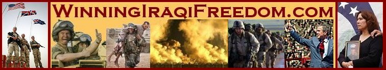

 |
|
HOME
ABOUT WARFARE MAPS WELCOME RELIEF SPEECHES PROTESTS MEMORIAL VICTORY CAPTURED LINKS STAMPS |
President Bush, May 24, 2004, - transferring power to a free Iraq. United States Army War College
THE PRESIDENT: Thank you all. Thank you and good evening. I'm honored to visit the Army War College. Generations of officers have come here to study the strategies and history of warfare. I've come here tonight to report to all Americans, and to the Iraqi people, on the strategy our nation is pursuing in Iraq, and the specific steps were taking to achieve our goals.
The actions of our enemies over the last few weeks have been brutal, calculating, and instructive. We've seen a car bombing take the life of a 61-year-old Iraqi named Izzedin Saleem, who was serving as President of the Governing Council. This crime shows our enemy's intention to prevent Iraqi self-government, even if that means killing a lifelong Iraqi patriot and a faithful Muslim. Mr. Saleem was assassinated by terrorists seeking the return of tyranny and the death of democracy.
We've also seen images of a young American facing decapitation. This vile display shows a contempt for all the rules of warfare, and all the bounds of civilized behavior. It reveals a fanaticism that was not caused by any action of ours, and would not be appeased by any concession. We suspect that the man with the knife was an al Qaeda associate named Zarqawi. He and other terrorists know that Iraq is now the central front in the war on terror. And we must understand that, as well. The return of tyranny to Iraq would be an unprecedented terrorist victory, and a cause for killers to rejoice. It would also embolden the terrorists, leading to more bombings, more beheadings, and more murders of the innocent around the world.
The rise of a free and self-governing Iraq will deny terrorists a base of operation, discredit their narrow ideology, and give momentum to reformers across the region. This will be a decisive blow to terrorism at the heart of its power, and a victory for the security of America and the civilized world.
Our work in Iraq has been hard. Our coalition has faced changing conditions of war, and that has required perseverance, sacrifice, and an ability to adapt. The swift removal of Saddam Hussein's regime last spring had an unintended effect: Instead of being killed or captured on the battlefield, some of Saddam's elite guards shed their uniforms and melted into the civilian population. These elements of Saddam's repressive regime and secret police have reorganized, rearmed, and adopted sophisticated terrorist tactics. They've linked up with foreign fighters and terrorists. In a few cities, extremists have tried to sow chaos and seize regional power for themselves. These groups and individuals have conflicting ambitions, but they share a goal: They hope to wear out the patience of Americans, our coalition, and Iraqis before the arrival of effective self-government, and before Iraqis have the capability to defend their freedom.
Iraq now faces a critical moment. As the Iraqi people move closer to governing themselves, the terrorists are likely to become more active and more brutal. There are difficult days ahead, and the way forward may sometimes appear chaotic. Yet our coalition is strong, our efforts are focused and unrelenting, and no power of the enemy will stop Iraq's progress. (Applause.)
Helping construct a stable democracy after decades of dictatorship is a massive undertaking. Yet we have a great advantage. Whenever people are given a choice in the matter, they prefer lives of freedom to lives of fear. Our enemies in Iraq are good at filling hospitals, but they do not build any. They can incite men to murder and suicide, but they cannot inspire men to live, and hope, and add to the progress of their country. The terrorists' only influence is violence, and their only agenda is death.
Our agenda, in contrast, is freedom and independence, security and prosperity for the Iraqi people. And by removing a source of terrorist violence and instability in the Middle East, we also make our own country more secure.
Our coalition has a clear goal, understood by all -- to see the Iraqi people in charge of Iraq for the first time in generations. America's task in Iraq is not only to defeat an enemy, it is to give strength to a friend - a free, representative government that serves its people and fights on their behalf. And the sooner this goal is achieved, the sooner our job will be done.
There are five steps in our plan to help Iraq achieve democracy and freedom. We will hand over authority to a sovereign Iraqi government, help establish security, continue rebuilding Iraq's infrastructure, encourage more international support, and move toward a national election that will bring forward new leaders empowered by the Iraqi people.
The first of these steps will occur next month, when our coalition will transfer full sovereignty to a government of Iraqi citizens who will prepare the way for national elections. On June 30th, the Coalition Provisional Authority will cease to exist, and will not be replaced. The occupation will end, and Iraqis will govern their own affairs. America's ambassador to Iraq, John Negroponte, will present his credentials to the new president of Iraq. Our embassy in Baghdad will have the same purpose as any other American embassy, to assure good relations with a sovereign nation. America and other countries will continue to provide technical experts to help Iraq's ministries of government, but these ministries will report to Iraq's new prime minister.
The United Nations Special Envoy, Lakhdar Brahimi, is now consulting with a broad spectrum of Iraqis to determine the composition of this interim government. The special envoy intends to put forward the names of interim government officials this week. In addition to a president, two vice presidents, and a prime minister, 26 Iraqi ministers will oversee government departments, from health to justice to defense. This new government will be advised by a national council, which will be chosen in July by Iraqis representing their country's diversity. This interim government will exercise full sovereignty until national elections are held. America fully supports Mr. Brahimi's efforts, and I have instructed the Coalition Provisional Authority to assist him in every way possible.
In preparation for sovereignty, many functions of government have already been transferred. Twelve government ministries are currently under the direct control of Iraqis. The Ministry of Education, for example, is out of the propaganda business, and is now concerned with educating Iraqi children. Under the direction of Dr. Ala'din al-Alwan, the Ministry has trained more than 30,000 teachers and supervisors for the schools of a new Iraq.
All along, some have questioned whether the Iraqi people are ready for self-government, or even want it. And all along, the Iraqi people have given their answer. In settings where Iraqis have met to discuss their country's future, they have endorsed representative government. And they are practicing representative government. Many of Iraq's cities and towns now have elected town councils or city governments - and beyond the violence, a civil society is emerging.
The June 30th transfer of sovereignty is an essential commitment of our strategy. Iraqis are proud people who resent foreign control of their affairs, just as we would. After decades under the tyrant, they are also reluctant to trust authority. By keeping our promise on June 30th, the coalition will demonstrate that we have no interest in occupation. And full sovereignty will give Iraqis a direct interest in the success of their own government. Iraqis will know that when they build a school or repair a bridge, they're not working for the Coalition Provisional Authority, they are working for themselves. And when they patrol the streets of Baghdad, or engage radical militias, they will be fighting for their own country.
The second step in the plan for Iraqi democracy is to help establish the stability and security that democracy requires. Coalition forces and the Iraqi people have the same enemies -- the terrorists, illegal militia, and Saddam loyalists who stand between the Iraqi people and their future as a free nation. Working as allies, we will defend Iraq and defeat these enemies.
America will provide forces and support necessary for achieving these goals. Our commanders had estimated that a troop level below 115,000 would be sufficient at this point in the conflict. Given the recent increase in violence, we'll maintain our troop level at the current 138,000 as long as necessary. This has required extended duty for the 1st Armored Division and the 2nd Light Cavalry Regiment -- 20,000 men and women who were scheduled to leave Iraq in April. Our nation appreciates their hard work and sacrifice, and they can know that they will be heading home soon. General Abizaid and other commanders in Iraq are constantly assessing the level of troops they need to fulfill the mission. If they need more troops, I will send them. The mission of our forces in Iraq is demanding and dangerous. Our troops are showing exceptional skill and courage. I thank them for their sacrifices and their duty. (Applause.)
In the city of Fallujah, there's been considerable violence by Saddam loyalists and foreign fighters, including the murder of four American contractors. American soldiers and Marines could have used overwhelming force. Our commanders, however, consulted with Iraq's Governing Council and local officials, and determined that massive strikes against the enemy would alienate the local population, and increase support for the insurgency. So we have pursued a different approach. We're making security a shared responsibility in Fallujah. Coalition commanders have worked with local leaders to create an all-Iraqi security force, which is now patrolling the city. Our soldiers and Marines will continue to disrupt enemy attacks on our supply routes, conduct joint patrols with Iraqis to destroy bomb factories and safe houses, and kill or capture any enemy.
We want Iraqi forces to gain experience and confidence in dealing with their country's enemies. We want the Iraqi people to know that we trust their growing capabilities, even as we help build them. At the same time, Fallujah must cease to be a sanctuary for the enemy, and those responsible for terrorism will be held to account.
In the cities of Najaf and Karbala and Kufa, most of the violence has been incited by a young, radical cleric who commands an illegal militia. These enemies have been hiding behind an innocent civilian population, storing arms and ammunition in mosques, and launching attacks from holy shrines. Our soldiers have treated religious sites with respect, while systematically dismantling the illegal militia. We're also seeing Iraqis, themselves, take more responsibility for restoring order. In recent weeks, Iraqi forces have ejected elements of this militia from the governor's office in Najaf. Yesterday, an elite Iraqi unit cleared out a weapons cache from a large mosque in Kufa. Respected Shia leaders have called on the militia to withdraw from these towns. Ordinary Iraqis have marched in protest against the militants.
As challenges arise in Fallujah, Najaf, and elsewhere, the tactics of our military will be flexible. Commanders on the ground will pay close attention to local conditions. And we will do all that is necessary -- by measured force or overwhelming force -- to achieve a stable Iraq.
Iraq's military, police, and border forces have begun to take on broader responsibilities. Eventually, they must be the primary defenders of Iraqi security, as American and coalition forces are withdrawn. And we're helping them to prepare for this role. In some cases, the early performance of Iraqi forces fell short. Some refused orders to engage the enemy. We've learned from these failures, and we've taken steps to correct them. Successful fighting units need a sense of cohesion, so we've lengthened and intensified their training. Successful units need to know they are fighting for the future of their own country, not for any occupying power, so we are ensuring that Iraqi forces serve under an Iraqi chain of command. Successful fighting units need the best possible leadership, so we improved the vetting and training of Iraqi officers and senior enlisted men.
At my direction, and with the support of Iraqi authorities, we are accelerating our program to help train Iraqis to defend their country. A new team of senior military officers is now assessing every unit in Iraq's security forces. I've asked this team to oversee the training of a force of 260,000 Iraqi soldiers, police, and other security personnel. Five Iraqi army battalions are in the field now, with another eight battalions to join them by July the 1st. The eventual goal is an Iraqi army of 35,000 soldiers in 27 battalions, fully prepared to defend their country.
After June 30th, American and other forces will still have important duties. American military forces in Iraq will operate under American command as a part of a multinational force authorized by the United Nations. Iraq's new sovereign government will still face enormous security challenges, and our forces will be there to help.
The third step in the plan for Iraqi democracy is to continue rebuilding that nation's infrastructure, so that a free Iraq can quickly gain economic independence and a better quality of life. Our coalition has already helped Iraqis to rebuild schools and refurbish hospitals and health clinics, repair bridges, upgrade the electrical grid, and modernize the communications system. And now a growing private economy is taking shape. A new currency has been introduced. Iraq's Governing Council approved a new law that opens the country to foreign investment for the first time in decades. Iraq has liberalized its trade policy, and today an Iraqi observer attends meetings of the World Trade Organization. Iraqi oil production has reached more than two million barrels per day, bringing revenues of nearly $6 billion so far this year, which is being used to help the people of Iraq. And thanks in part to our efforts -- to the efforts of former Secretary of State James Baker, many of Iraq's largest creditors have pledged to forgive or substantially reduce Iraqi debt incurred by the former regime.
We're making progress. Yet there still is much work to do. Over the decades of Saddam's rule, Iraq's infrastructure was allowed to crumble, while money was diverted to palaces, and to wars, and to weapons programs. We're urging other nations to contribute to Iraqi reconstruction -- and 37 countries and the IMF and the World Bank have so far pledged $13.5 billion in aid. America has dedicated more than $20 billion to reconstruction and development projects in Iraq. To ensure our money is spent wisely and effectively, our new embassy in Iraq will have regional offices in several key cities. These offices will work closely with Iraqis at all levels of government to help make sure projects are completed on time and on budget.
A new Iraq will also need a humane, well-supervised prison system. Under the dictator, prisons like Abu Ghraib were symbols of death and torture. That same prison became a symbol of disgraceful conduct by a few American troops who dishonored our country and disregarded our values. America will fund the construction of a modern, maximum security prison. When that prison is completed, detainees at Abu Ghraib will be relocated. Then, with the approval of the Iraqi government, we will demolish the Abu Ghraib prison, as a fitting symbol of Iraq's new beginning. (Applause.)
The fourth step in our plan is to enlist additional international support for Iraq's transition. At every stage, the United States has gone to the United Nations -- to confront Saddam Hussein, to promise serious consequences for his actions, and to begin Iraqi reconstruction. Today, the United States and Great Britain presented a new resolution in the Security Council to help move Iraq toward self-government. I've directed Secretary Powell to work with fellow members of the Council to endorse the timetable the Iraqis have adopted, to express international support for Iraq's interim government, to reaffirm the world's security commitment to the Iraqi people, and to encourage other U.N. members to join in the effort. Despite past disagreements, most nations have indicated strong support for the success of a free Iraq. And I'm confident they will share in the responsibility of assuring that success.
Next month, at the NATO summit in Istanbul, I will thank our 15 NATO allies who together have more than 17,000 troops on the ground in Iraq. Great Britain and Poland are each leading a multinational division that is securing important parts of the country. And NATO, itself, is giving helpful intelligence, communications, and logistical support to the Polish-led division. At the summit, we will discuss NATO's role in helping Iraq build and secure its democracy.
The fifth and most important step is free, national elections, to be held no later than next January. A United Nations team, headed by Carina Perelli, is now in Iraq, helping form an independent election commission that will oversee an orderly, accurate national election. In that election, the Iraqi people will choose a transitional national assembly, the first freely-elected, truly representative national governing body in Iraq's history. This assembly will serve as Iraq's legislature, and it will choose a transitional government with executive powers. The transitional national assembly will also draft a new constitution, which will be presented to the Iraqi people in a referendum scheduled for the fall of 2005. Under this new constitution, Iraq will elect a permanent government by the end of next year.
In this time of war and liberation and rebuilding, American soldiers and civilians on the ground have come to know and respect the citizens of Iraq. They're a proud people who hold strong and diverse opinions. Yet Iraqis are united in a broad and deep conviction: They're determined never again to live at the mercy of a dictator. And they believe that a national election will put that dark time behind them. A representative government that protects basic rights, elected by Iraqis, is the best defense against the return of tyranny -- and that election is coming. (Applause.)
Completing the five steps to Iraqi elected self-government will not be easy. There's likely to be more violence before the transfer of sovereignty, and after the transfer of sovereignty. The terrorists and Saddam loyalists would rather see many Iraqis die than have any live in freedom. But terrorists will not determine the future of Iraq. (Applause.)
That nation is moving every week toward free elections and a permanent place among free nations. Like every nation that has made the journey to democracy, Iraqis will raise up a government that reflects their own culture and values. I sent American troops to Iraq to defend our security, not to stay as an occupying power. I sent American troops to Iraq to make its people free, not to make them American. Iraqis will write their own history, and find their own way. As they do, Iraqis can be certain, a free Iraq will always have a friend in the United States of America. (Applause.)
In the last 32 months, history has placed great demands on our country, and events have come quickly. Americans have seen the flames of September the 11th, followed battles in the mountains of Afghanistan, and learned new terms like "orange alert" and "ricin" and "dirty bomb." We've seen killers at work on trains in Madrid, in a bank in Istanbul, at a synagogue in Tunis, and at a nightclub in Bali. And now the families of our soldiers and civilian workers pray for their sons and daughters in Mosul and Karbala and Baghdad.
We did not seek this war on terror, but this is the world as we find it. We must keep our focus. We must do our duty. History is moving, and it will tend toward hope, or tend toward tragedy. Our terrorist enemies have a vision that guides and explains all their varied acts of murder. They seek to impose Taliban-like rule, country by country, across the greater Middle East. They seek the total control of every person, and mind, and soul, a harsh society in which women are voiceless and brutalized. They seek bases of operation to train more killers and export more violence. They commit dramatic acts of murder to shock, frighten and demoralize civilized nations, hoping we will retreat from the world and give them free rein. They seek weapons of mass destruction, to impose their will through blackmail and catastrophic attacks. None of this is the expression of a religion. It is a totalitarian political ideology, pursued with consuming zeal, and without conscience.
Our actions, too, are guided by a vision. We believe that freedom can advance and change lives in the greater Middle East, as it has advanced and changed lives in Asia, and Latin America, and Eastern Europe, and Africa. We believe it is a tragedy of history that in the Middle East -- which gave the world great gifts of law and science and faith -- so many have been held back by lawless tyranny and fanaticism. We believe that when all Middle Eastern peoples are finally allowed to live and think and work and worship as free men and women, they will reclaim the greatness of their own heritage. And when that day comes, the bitterness and burning hatreds that feed terrorism will fade and die away. America and all the world will be safer when hope has returned to the Middle East.
These two visions -- one of tyranny and murder, the other of liberty and life -- clashed in Afghanistan. And thanks to brave U.S. and coalition forces and to Afghan patriots, the nightmare of the Taliban is over, and that nation is coming to life again. These two visions have now met in Iraq, and are contending for the future of that country. The failure of freedom would only mark the beginning of peril and violence. But, my fellow Americans, we will not fail. We will persevere, and defeat this enemy, and hold this hard-won ground for the realm of liberty.
May God bless our country.
|
Copyright © 2003 by Jeff Head. All Rights Reserved.
Web Site by Just-Fix-It Web Services
free hit counter